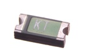

SMD (1206) 1 Amp Resetable Fuse 8v - RF121
Summary
Name: SMD (1206) 1 Amp Resetable Fuse 8v
ID: REFU-1206-X-A01-V8
Hex ID: RF121
WebPage: https://github.com/oomlout/oomlout-OOMP/wiki/REFU-1206-X-A01-V8
Short URL: http://oom.lt/RF121
Revision History: https://github.com/oomlout/oomlout-OOMP/blob/master/parts/REFU-1206-X-A01-V8/
| Type |
Size |
Color |
Description |
Index |
REFU
Resetable Fuse |
1206
SMD (1206) |
X
|
A01
1 Amp |
V8
8v |
Images

About
This part is awaiting a description.
Specifications
| Info |
Value |
| Type |
Resetable Fuse |
| Size |
SMD (1206) |
| Description |
1 Amp |
| Index |
8v |
Extra Details
Spotted a mistake, want to add more? Let us know oomp@oomlout.com
All images and resources are licensed [CC BY-SA] unless otherwise stated (ie. the datasheets)